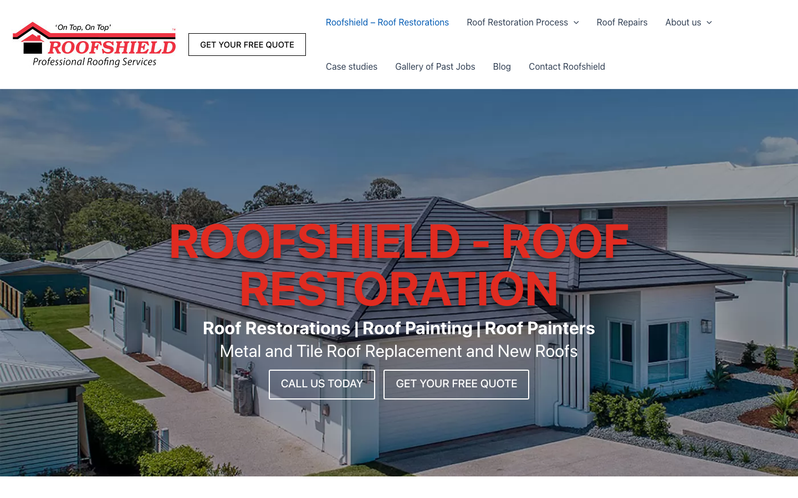
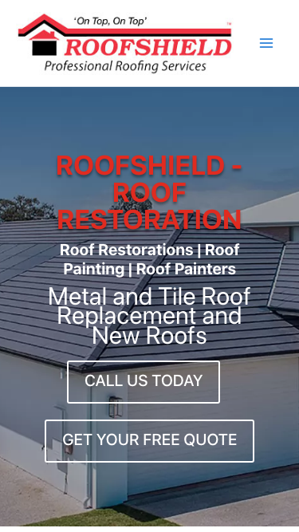

53/100 · strong_redesign · 行业：roofing · 地区：Brisbane · Google 评价：4.4★ （51 条）
审计结论： audit_score=53 → strong_redesign · weakest: gbp 37, technical 40 · fired: no_https · 2 critical issues
已触发的 hard triggers： no_https
independent_http_site

The site presents a professional, established business identity but relies on a dated ‘overlay’ hero style that obscures the imagery and creates visual clutter.
新鲜度 6/10 · 信任度 7/10 ·
转化准备度 7/10 · 设计年代
slightly_outdated
值得保留的优点： - The logo is clear, legible, and establishes brand identity immediately. - The background image is high-quality and relevant, showing a finished residential roof. - The value proposition (Metal and Tile Roof Replacement) is clearly listed below the headline.
Customers are polarized, with many praising the professionalism, communication, and quality of work, while others report severe issues with warranty enforcement, poor project management, and unfinished jobs.
一致夸赞： excellent communication ·
friendly and respectful staff ·
detailed process explanation ·
high-quality workmanship ·
prompt assistance
抱怨 / 短板：
warranty enforcement difficulties ·
poor project management ·
messy work site cleanup ·
substandard paint application
可直接放上 redesign 后网站的 quote：
“Rich was informative and helpful and worked to get us good value. He explained the entire process in detail.” — Deidre, ★★★★★
放哪：Testimonials section highlighting transparency and value
“Great contact throughout and photos sent to me at each visit to help me understand the issues and resolutions.” — Paul, ★★★★★
放哪：Trust section emphasizing communication and customer care
“We could not be happier with the workmanship, attention to detail and politeness of all staff and tradespeople.” — Christine, ★★★★★
放哪：Hero section proof of quality and professionalism
命中原因： http only
命中原因： phone hidden below fold or missing
命中原因： title=‘# ROOFSHIELD - ROOF RESTORATION’ contains-name=true contains-niche=false
命中原因： no LocalBusiness JSON-LD
-2026-05-11-v1ollama-qwen3.6-27b-nothinkGoogle Places Place Details · most_relevant